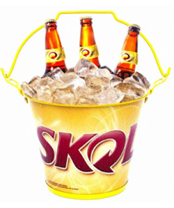

Skol

Skol é uma marca de cerveja de propriedade da empresa dinamarquesa Carlsberg,
com licença para ser fabricada no Brasil. Seu nome vem da palavra sueca skál,
que literalmente significa tigela ou copo, mas é utilizada para brindes nos idiomas nórdicos,
similar à expressão "saúde!" no português.- 